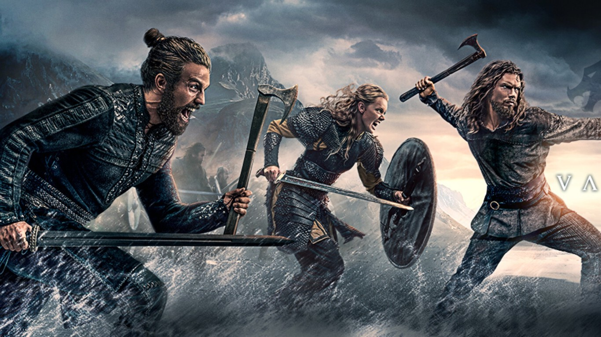
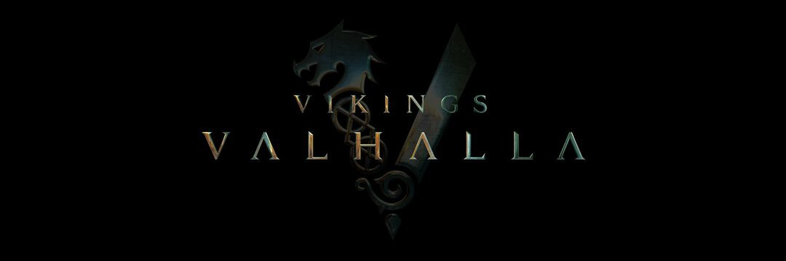

'Vikingos: Valhalla': todo lo que sabemos sobre la temporada 2 de la serie de Netflix
'Vikingos: Valhalla' ha sido un gran éxito para Netflix, algo que la plataforma ya esperaba, pues en su momento encargó 24 episodios de la serie y la primera temporada consta de apenas ocho. Eso no impidió que la plataforma anunciase por todo lo alto una falsa renovación poco después de su estreno, pues el rodaje de la segunda temporada hacía meses que había finalizado.
A continuación vamos a repasar todo lo que se sabe sobre la temporada 2 de 'Vikingos: Valhalla', una secuela de la también muy exitosa 'Vikingos' situada 100 años de las andanzas de Ragnar, Lagherta y compañía. Como siempre hacemos en este tipo de artículos, la información incluida aquí irá actualizándose a medida que se sepa más sobre ella.
La historia
'Vikingos: Valhalla' dejó varios frentes abiertos al final de su primera temporada que la segunda tendrá que resolver, desde qué será de Olaf tras su efímera conquista de Kattegat por la inesperada llegada de Forkbeard con las tripas de Cnut, sin olvidarnos de un enfurecido Leif tras la muerte de Liv.
No nos olvidemos tampoco de Freydis, destinada a ser la última de algo, sin que haya quedado del todo claro a qué se refiere la serie con eso, la insaciable sed de poder de Cnut o la historia real de Harald, destinado a convertirse en el rey de Noruega. Pero ojo, que uno de los grandes cambios de la serie respecto a la realidad ha sido adelantar su aparición, así que está por ver cuánto se dilata eso...
Reparto y protagonistas
La segunda temporada de 'Vikingos: Valhalla' contará con los regresos de todos los personajes principales que sobrevivieron a los sucesos narrados en la primera. Vamos, que veremos de nuevo, entre otros, a Sam Corlett como Leif Erikson, Frida Gustavsson como Freydís Eiríksdóttir, Leo Suter como Harald Sigurdsson, Bradley Freegard como el Rey Cnut, Jóhannes Haukur Jóhannesson como Olaf Haraldsson, Laura Berlin como la reina Emma de Normandia o David Oakes como Godwin.
El rodaje
Wicklow Town looking stunning this week during filming for Valhalla, a spin-off of 'Vikings'!
— Visit Wicklow (@visitwicklow) September 10, 2021
Photo Credit: Egita Feldberga#Wicklow #HollywoodofEurope #Vikings#KeepDiscovering pic.twitter.com/YSQi1hOhnt
La grabación de los ocho episodios que darán forma a la segunda temporada arrancó en agosto de 2021 en los estudios Ashford situados en Irlanda. Al contrario que con la primera, que sufrió algún parón provocado por el coronavirus, la grabación transcurrió sin grandes contratiempos hasta llegar a su final en noviembre.
Tráiler, imágenes y cartel
Sound the horns. Vikings: Valhalla is returning for Season 2 & 3. SKOL! 🔥 ⚔️ 🛡 pic.twitter.com/y6vmMVJual
— Vikings Valhalla (@NetflixValhalla) March 9, 2022
Netflix todavía no ha lanzado ninguna imagen oficial de la segunda temporada. Estaremos atentos a cuando tengamos algún vistazo oficial para incluirlo aquí. Por ahora os dejamos el vídeo con el que la plataforma confirmó oficialmente su renovación.
¿Cuándo se estrena la temporada 2 de 'Vikingos: Valhalla en Netflix?
Netflix ha confirmado que la temporada 2 de 'Vikingos: Valhalla' no se estrenará hasta 2023. Todavía se desconoce la fecha, pero de esperar que tenga lugar durante el primer semestre del año, pues, como hemos comentado previamente. el rodaje de estos ocho nuevos episodios ya ha finalizado.
El futuro de la serie
Ya está garantizado que 'Vikingos: Vahalla' tendrá, como mínimo, tres temporadas. El rodaje de esos ocho episodios adicionales arrancará esta primavera de 2022.
Fuente: ESPINOFF